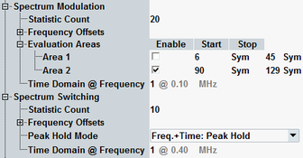

The following parameters configure the spectrum due to modulation and due to switching settings of the GSM multi-evaluation measurement. They are contained in section measurement control.

Defines the number of measurement intervals per measurement cycle (statistics cycle, single-shot measurement). This value is also relevant for continuous measurements, because the averaging procedures depend on the statistic count.
The measurement interval is completed when the R&S CMW has measured the full slot sequence (no. of slots).
Remote command:Enables the spectrum measurement at up to 20 offsets from the analyzer frequency (to be set to the nominal carrier frequency of the measured UL GSM signal). Each enabled frequency offset corresponds to a symmetric pair of bars in the spectrum modulation frequency and spectrum switching frequency diagrams.
The frequency offsets can be set to arbitrary values between 0 MHz and 3 MHz. The default configuration corresponds to the conformance test specification 3GPP TS 51.010-1. It specifies 11 enabled frequency offsets for the spectrum modulation measurement and 4 enabled offsets for the spectrum switching measurement.
Remote command:Enables and configures two time intervals (areas) that are used for the spectrum modulation measurement; see "Configuring the Spectrum Measurement". The purpose of the evaluation areas is to gate the spectrum in accordance with the test specification 3GPP TS 51.010-1: Only the symbols in the enabled areas contribute to the displayed spectrum due to modulation.
Remote command:Defines an offset frequency for the spectrum modulation time or spectrum switching time diagram. The diagrams show the measured power vs. time at the selected offset frequency. The numbers 1 to 20 select the negative frequency offsets from the frequency offsets list, numbers 21 to 40 select the positive frequency offsets.
Remote command:Specifies whether peak hold mode is used for the spectrum switching results in frequency domain (bar graphs) and in time domain. Peak hold mode means that the R&S CMW displays the largest values obtained since the start of the measurement. The old results are only cleared when a new measurement is started.
In the alternative setting, the frequency domain diagram shows the largest values in the current measurement cycle (peak hold mode per statistics cycle). The time domain diagram shows current results (peak hold mode disabled).
Peak hold mode is in accordance with the test procedure described in the conformance test specification.
Remote command: